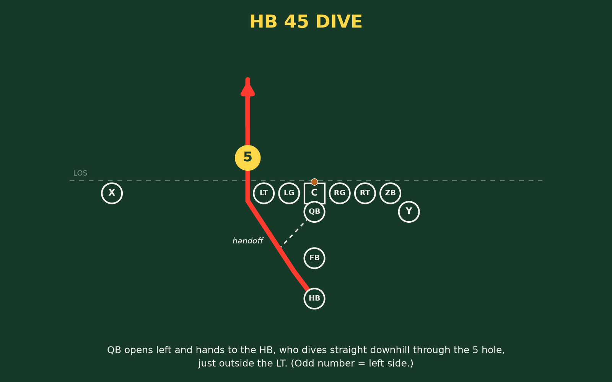
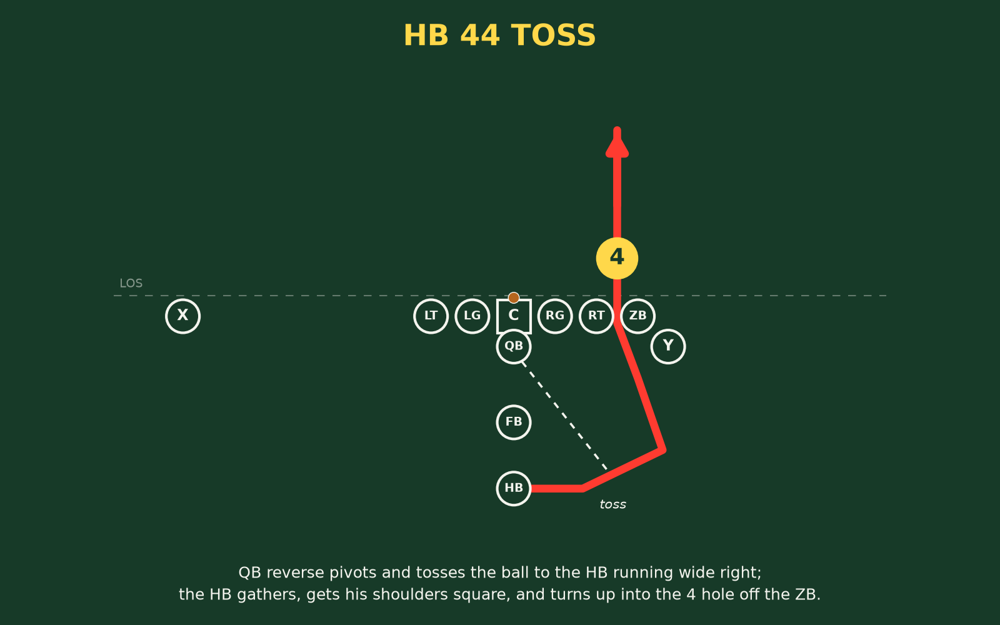

A real 8-0 district champion, and the plays they ran.
In real life, Blake coached an 8-0, district-champion 7th grade B team in El Campo. They ran a 1970s-style offense.
This page is about a real team Blake coached. It is not a game-save result.
The core plays
These plays were also drawn in the OSN playbook files. Odd numbers go left. Even numbers go right.

HB 45 DiveThe quarterback opens left and hands to the halfback, who dives straight downhill through the 5 hole, just outside the left tackle.HB 44The quarterback opens right and hands to the halfback, who hits the 4 hole off the ZB, between the right tackle and the ZB.

HB 44 TossThe quarterback reverse-pivots and tosses the ball to the halfback running wide right. The halfback gathers, squares his shoulders, and turns up into the 4 hole.Base formationSeven on the line (X wide left, left tackle, left guard, center, right guard, right tackle, ZB), with Y as a wingback off the ZB's hip, and the quarterback, fullback, and halfback behind.
The Delaware Wing-T
These three Wing-T plays are from the OSN playbook files.
FB Belly G Right (off the ZB)The Delaware Wing-T Belly. The right guard pulls and kicks out, and the quarterback rides the fullback and hands the ball off the ZB.CB 21 Buck Sweep RightThe Delaware Wing-T Buck Sweep. Both guards pull right, and the quarterback hands to the cornerback, who sweeps behind the guards.FB Trap (right of center)The Delaware Wing-T Trap. The left guard pulls and traps the first defensive lineman past the center, and the fullback hits the hole.